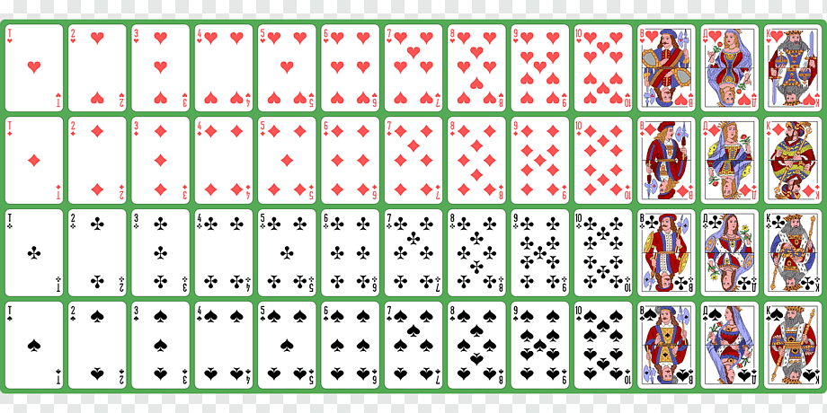
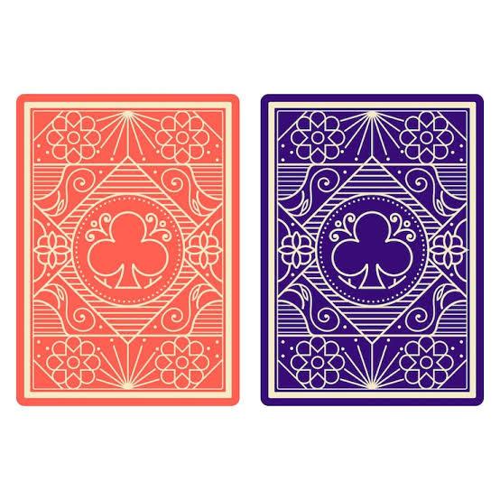

El juego muestra una carta y tenés que adivinar si la próxima carta será mayor o menor que la anterior.
Elegír "mayor" si pensás que la próxima carta tendrá un número más alto, o "menor" si pensás que tendrá un número más bajo.


¿La próxima carta será?
Ronda:0
Puntos:0